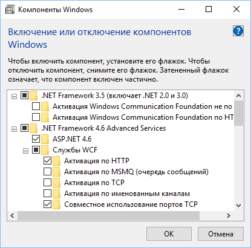

Рис. 1. Компоненты .NET для Windows 7
Для корректной работы Rapid SCADA необходимо включить определённые компоненты Windows. Перейдите в Панель управления > Программы > Включение или отключение компонентов Windows. Компоненты Microsoft .NET Framework, которые нужно включить, показаны на рис. 1 и 3. Обратите внимание, что для Microsoft .NET Framework 3.5 обязательно должны быть отключены вложенные компоненты Windows Communication Foundation.
Для корректной работы веб-приложения Вебстанция должны быть установлены определённые компоненты веб-сервера Internet Information Services (IIS). На рис. 2 и 4 показан выбор обязательных для работоспособности веб-приложения компонентов. При установке веб-приложения наличие данных компонентов автоматически проверяется программой-установщиком.
Рис. 1. Компоненты .NET для Windows 7

Рис. 2. Компоненты IIS для Windows 7

Рис. 3. Компоненты .NET для Windows 10

Рис. 4. Компоненты IIS для Windows 10
Установка программного комплекса должна запускаться из файла ScadaSetup.exe. Установку необходимо выполнять под учётной записью, которая обладает правами администратора на компьютере. Если установка происходит в операционной системе Microsoft Windows 7 и выше, необходимо с помощью контекстного меню запустить установочный файл ScadaSetup.exe от имени администратора или отключить уведомления о вносимых в компьютер изменениях в параметрах контроля учётных записей пользователей. Программа-установщик показана на рис. 5.
Для работы Rapid SCADA требуется наличие на компьютере среды выполнения Microsoft .NET Framework 4. Если среда выполнения не установлена, её установка будет запущена автоматически. Если установка производится на устаревшую ОС Windows XP или Windows Server 2003, то перед запуском ScadaSetup.exe необходимо дополнительно загрузить из Интернета и установить Microsoft .NET Framework 3.5 SP1.

Рис. 5. Программа-установщик
В процессе установки сначала предлагается выбрать инсталлируемые приложения, входящие в состав комплекса, а затем предлагается выбрать директорию для установки (рис. 6). Данная директория определяет расположение всего программного комплекса, в ней создаются поддиректории, необходимые для работы инсталлируемых приложений. Рекомендуется использовать директорию по умолчанию C:\SCADA, чтобы упростить последующую настройку приложений.

Рис. 6. Выбор директории для установки
Параметры установки веб-приложения (рис. 7) согласуются с системным администратором. Если специфические требования к веб-приложению отсутствуют, следует использовать значения по умолчанию.

Рис. 7. Параметры установки веб-приложения
После завершения установки рекомендуется с помощью Диспетчера служб IIS убедиться, что веб-приложение Scada использует пул приложений с версией среды .NET 4.0 и встроенным режимом конвейера. В Windows 7 и Windows 10 диспетчер открывается так: Панель управления > Система и безопасность > Администрирование > Диспетчер служб IIS.